"http://www.w3.org/TR/xhtml1/DTD/xhtml1-transitional.dtd"> 
Accounts Operations
eSuite Manage > Accounting > Receivable > Accounts Summary
Information
The Accounts summary entry in eSuite Manage module is used for operations related to customer's account payments, balance adjustments, validating customers account balances and activities down to transaction details for both Local account type and Centralized account type (SMSPay).
NOTE: Through our the Accounting Module you have the choice to select customer type in the wizards. Make sure to choose the correct account type. Use Local (accounts saved in native tables) or Centralized (at the host level in SMSPay tables).
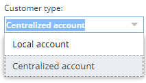
This document shows how to:
- Create a Balance adjustment
- Apply an Open payment
- Apply a Match payment
- Pay all invoices
- Submit interest
- Analyze customer A/R transaction details
Creating a Balance adjustment
Balance adjustments are created in eSuite Manage / Receivable / Accounts summary.
To create a balance adjustment:
- In the launcher, click the arrow on Accounting entry to display its menu.
- Click on Receivable: the start window opens on the desktop
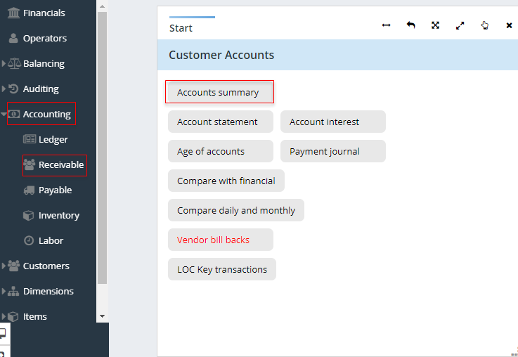
- Click on Account summary: the search wizard will open on desktop
- Add all necessary criteria and click Execute
- Select the customer account
NOTE: Multiple customer selection is not permitted when using the Action tab. If you have more than one customer selected, you will receive the following warning message:
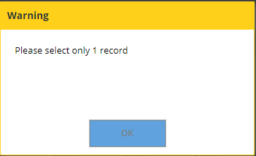
- Click on Action
- Select Balance adjustment
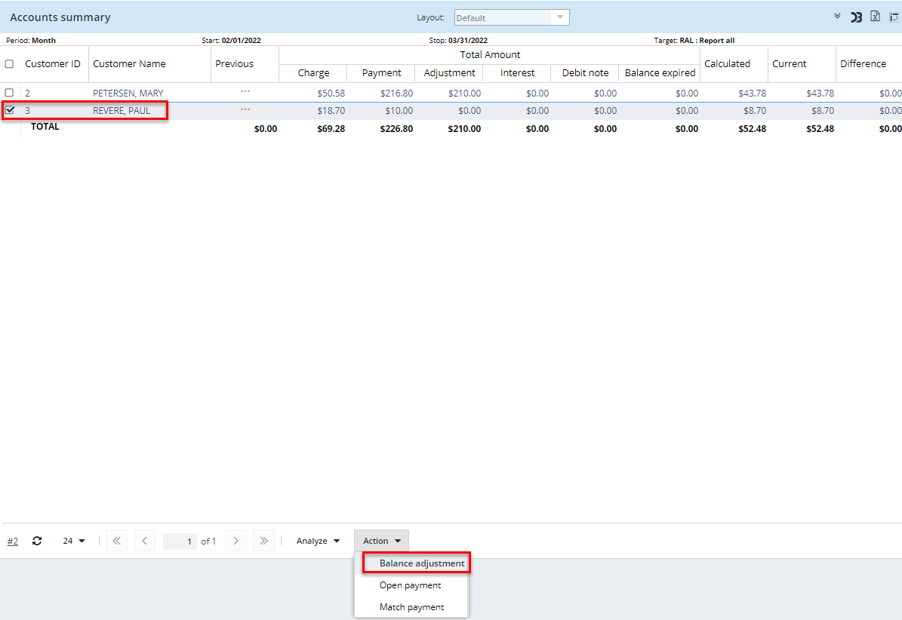
The Account balance adjustment window will open up showing the account number and customer's current balance
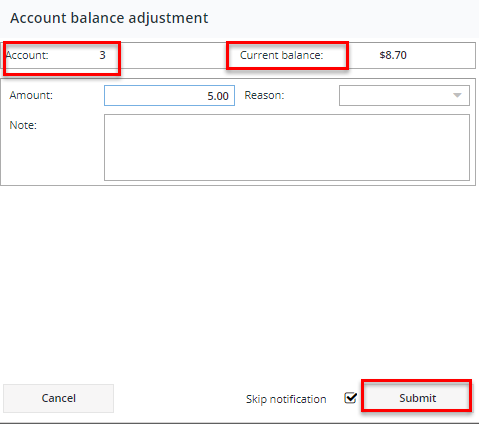
- Enter the balance adjustment amount (required field), reason code (if applicable) and notes (if applicable)
- Select Skip notification (if applicable)
- Click Submit
- Refresh the Summary grid. The adjustment will be added to the Cust.adjustment column and the amount will be reflected in the Calculated and Current columns
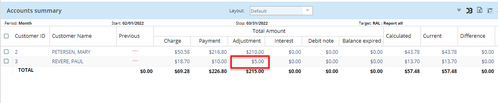
Applying an Open payment
Open payments are payments that will apply to the oldest balance and are not matched to a specific invoice. Open payments in eSuite are applied in eSuite Manage / Receivable / Accounts summary and can only be paid by check.
To create an open payment
- In the launcher, click the arrow on Accounting entry to display its menu.
- Click on Receivable: the start window opens on the desktop
- Click on Account summary: the search wizard will open on desktop
- Add all necessary criteria and click Execute
- Select the customer account
- Click on Action
- Select Open payment
-
The Account Open Payment window will open up showing you the account number and customer's current balance.
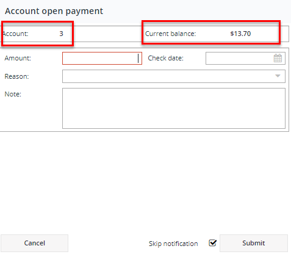
- Enter open check date, open payment amount (required field), reason code (if applicable) and notes (if applicable)
- Select Skip notification (if applicable)
- Click Submit
- Refresh Summary grid. The open payment will be added to the payment column and the amount will be reflected in the Calculated and Current columns
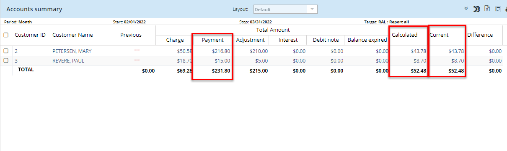
Match payment to the invoice
The match payments option is used when the customer wants the payment to be applied to a specific invoice, matching the payment to the invoice. Match payments in eSuite are applied in eSuite Manage / Receivable / Accounts summary and can only be paid by check.
- In the launcher, click the arrow on Accounting entry to display its menu
- Click on Receivable: the start window opens on the desktop
- Click on Account summary: the search wizard will open on desktop
- Add all necessary criteria and click Execute
- Select the customer account
- Click on Action
- Select Match payment
-
The Account Match Payment window will open on desktop showing you the account number, name and due amount.
- Enter the check amount
- Enter Reference (if applicable - this could be used to enter the check number as a reference)
- Check date: the date in which you want the check payment to apply to. If no date is entered then the transaction will be on current date
- Balance: this field will keep a running count of the balance left to match (payment verses matched invoice. Once you have entered the check amount, the balance will show in negative until you select the invoice you wish to match the payment to.
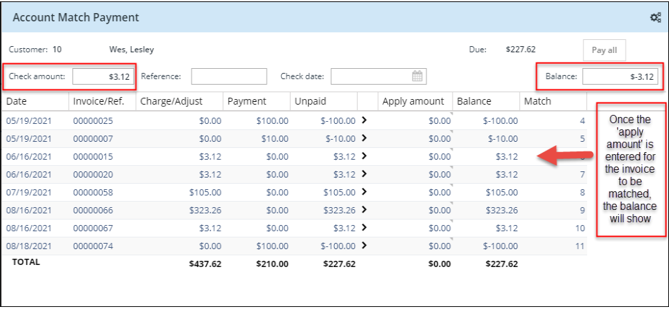
The balance needs to be at 0.00 in order to apply and save the match payment. Otherwise you will received an error message:
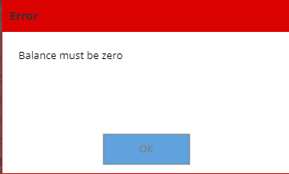
NOTE: You can do a partial payment using the Match payment option. See example provided. A check amount of $100.00 is applied to account #5. With the $100.00 check I have enough to match payment for invoice #00000043, 0000044 and partial payment for 0000061. This is leaving an amount of $25.62 left to pay on invoice #00000061

Pay all invoices
The Pay All option allows you to enter a check and pay all of the outstanding invoice in one transaction. Pay All payment in eSuite are applied in eSuite Manage / Receivable / Accounts summary and can only be paid by check.
The pay all can be done in Open payment or Match payment
Pay all in Open payment:
- In the launcher, click the arrow on Accounting entry to display its menu.
- Click on Receivable: the start window opens on the desktop
- Click on Account summary: the search wizard will open on desktop
- Add all necessary criteria and click Execute
- Select the customer account
- Click on Action
- Select Open payment
- The window will show that account number and balance due
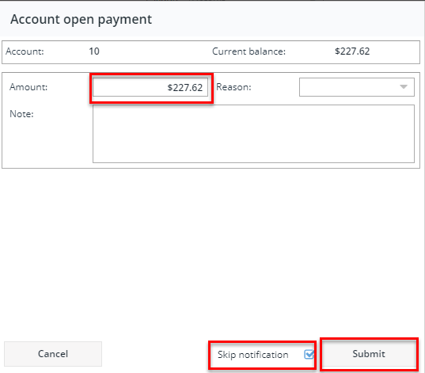
- Enter open payment amount for full balance due amount (required field), reason code (if applicable) and notes (if applicable)
- Select Skip notification (if applicable)
- Click Submit
- Refresh Summary grid
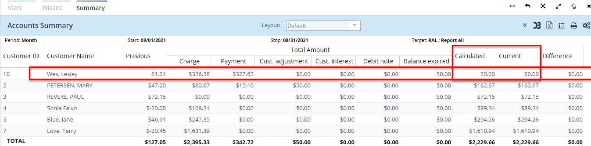
Pay all in Match payment:
- In the launcher, click the arrow on Accounting entry to display its menu.
- Click on Receivable: the start window opens on the desktop
- Click on Account summary: the search wizard will open on desktop
- Add all necessary criteria and click Execute
- Select the customer account
- Click on Action
- Select Match payment
-
The Account Match Payment window will open on desktop showing you the account number, name and due amount.
- Select Pay all. The amounts will auto populate and matched each invoice

- Enter Reference (if applicable - this could be used to enter the check number as a reference)
- Check date: the date in which you want the check payment to apply to. If no date is entered then the transaction will be on current date
- Select Skip notification (if applicable)
- Click Submit
- Refresh Summary grid
Analyzing customers A/R transactions
The Analyze option allows you to view customers transaction details and multi total reports
To access the transaction details in Accounts summary:
- In the launcher, click the arrow on Accounting entry to display its menu.
- Click on Receivable: the start window opens on the desktop
- Click on Account summary: the search wizard will open on desktop
- Add all necessary criteria and click Execute
- Select the customer account
- Click on Analyze
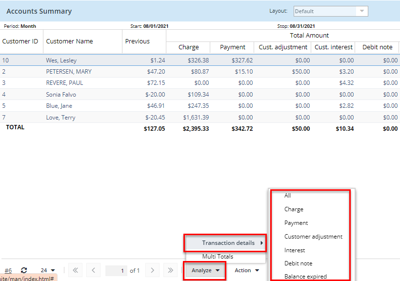
- Once in transaction detail you can drill down to customer info / tables using the Edit option or ej information using the Action option
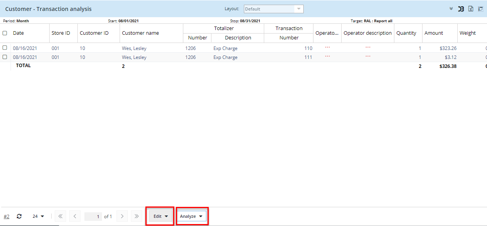
NOTE: In Account summary using the customer type 'Centralized' the Debit note and Balance expired columns do not exist - future development
â–²